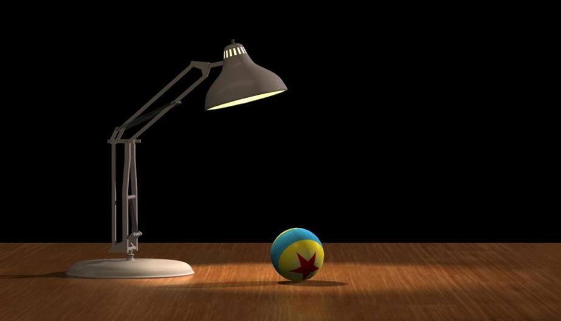

In this project, you will test your skills with shader-based OpenGL by creating and rendering a 3D scene. This involves:
Or, in other words, everything you have been working with on the since the midterm. Slides describing the final can be found here.
Unlike the midterm project and the labs, no programming environment is being provided to you for this assignment. You are free to re-use any or all components from earlier OpenGL-based assignments.
The earlier OpenGL assignments provided several examples of objects represented by polygon meshes (e.g., a quad and a teapot). You are free to use these, or to re-use your tessellation routines from lab 4. You are more than welcome to use 3D models that you find on the Internet (as long as you attribute them in your submission). Alternatively, you may use a modeling program such as Blender to create object models, export the vertex and normal data from the modeling program, and use those models in your program. It will be up to you to get any models that you use into the proper format to be used in an OpenGL application.
The theme of the final project is reproducing an existing artwork. You can either choose the artwork that you submitted for the activity: week 11 - online activity (graphics imitating art) - due Wednesday Nov 15 before lecture or you can attempt to reproduce the default image of Luxo Jr. given below. In either case, your task is to reproduce your chosen image to the best of your ability using the OpenGL/GLSL techniques we have covered this semester.

Clearly, most shapes in any piece of artwork can be complex, so it is expected that you will create approximations of them; for instance, clearly the ball can be represented as a sphere. However, Luxo can be approximated using a set of stretched cubes with a stretched cone at the top. For very complex shapes such as the wood floor, you could use a flat polygon onto which a picture of wood has been texture-mapped.
In general, your project must include the following:
At least 3 separate pieces of geometry, each modeled locally and transformed (using model transformations) to position and orient it into the 3D world space
Non-default camera positioning, using a frustum/perspective projection
At least one point light source
Use of at least one texture
Shading on all objects which aren't texture-mapped, with at least two visually different sets of material properties.
For your texture image, you may use an actual image, or may use a procedurally-generated texture. This can be mapped onto a flat surface (as in lab 6), or you may choose to use cylindrical or spherical mapping onto some other shape.
Your image can be a static image, or can include animation. Simple forms of animation could involve translation/rotation/scaling of objects. More interesting animation could involve moving light sources or the camera. Animation can be discrete (i.e., one keystroke produces one change) or continuous (one keystroke starts animation, another stops it). Several of the 3D labs include code to perform animations, and you are free to reuse or adapt it as needed.
The only restrictions on what you do are as follows:
You are free to build your own models if you wish, or use a modeling program such as Blender or Maya to build them, or even use models found on the Internet. If you use a modeling program to generate your object models, you must identify the program used and what information (e.g., vertex locations, surface normals, etc.) the program provided for you. If you use a model from a Web site, you should acknowledge the source of the model.
Each shader program must perform a single type of shading - e.g., if you want to do Phong shading, flat shading, and texture mapping, you will need three shader programs.
The names of the shader program source files comprising a single shader program must have a common prefix (e.g., phong.frag and phong.vert), and you must use the .frag and .vert file name suffixes we have been using all semester.
All shader programs must be written by you. While you are free to research techniques for shading, any code inspired by outside sources must be completely documented as to the source.
For this assignment, you should submit the following:
All of your source files, including your shader files and all C/C++ or python source files.
All of the texture image files you are using.
Any additional library files (see below).
If you are using one of the matrix libraries described in the Notes section of the lab 5 writeup, please do not submit copies of those files; If you are using a matrix library other than the ones described there, then you must submit those files with your solution.
Finally, please submit all of your files compressed as a single ZIP file. You can place your submission in the Dropbox labeled Final Programming Assignment.
This assignment is due on December 15, 2017 by 11:59PM. This is a hard deadline if I am to get your final course grades posted on time. There will be no extension or resubmits! No exceptions.
Your submission will be graded out of 100 points, as follows:
10 points of your grade are reserved for style points. Items considered for style points are given below. In addition, you can earn up to extra bonus points (at the discretion of your instructor) for going above and beyond the basic requirements for this assignment and doing more of these than required.
Note especially that you are not being graded on your artistic ability or your ability to create perfectly-crafted object models. You are being graded on your ability to create objects which approximate the ones in the image, place them in approximately correct positions, and shade them as described above.
As discussed in class, remember that the intent of this assignment is for you to apply all of the experience you have gained throughout the course and, more specifically, through the OpenGL programming assignments. This means that you are submitting a shader-based OpenGL program. Solutions which use fixed-pipeline OpenGL or related deprecated OpenGL functions or support libraries (such as the GLU library) are not acceptable.
Finally, I hope you will have some fun with this assignment....I will try to post a sampling of the image results to mycourses after final grades for the class have been submitted.